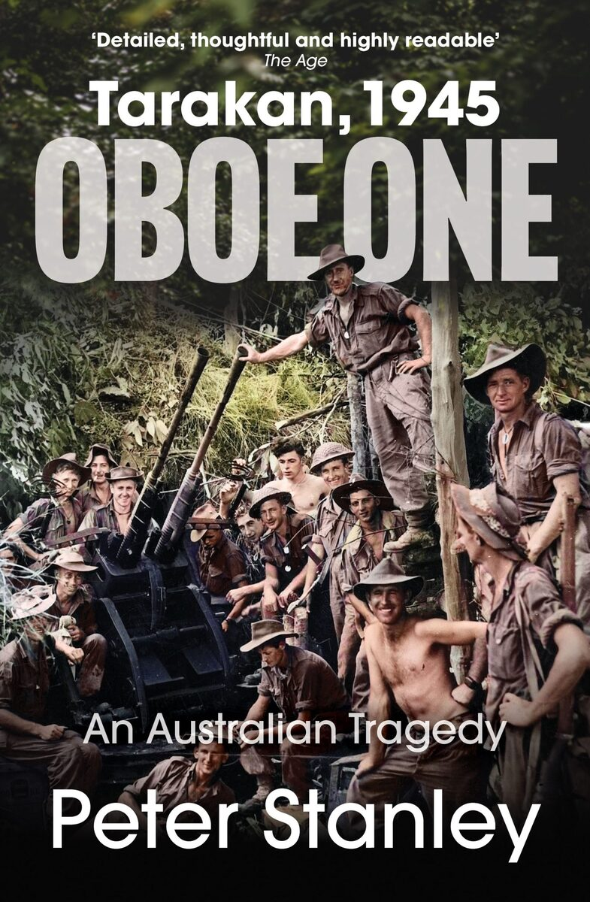
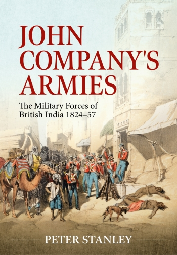
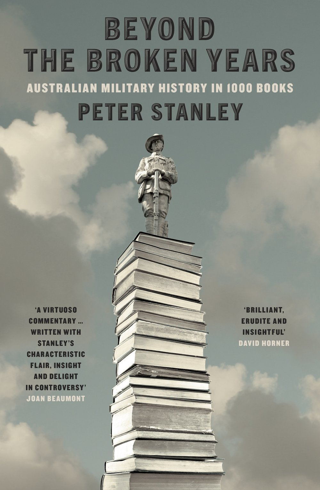
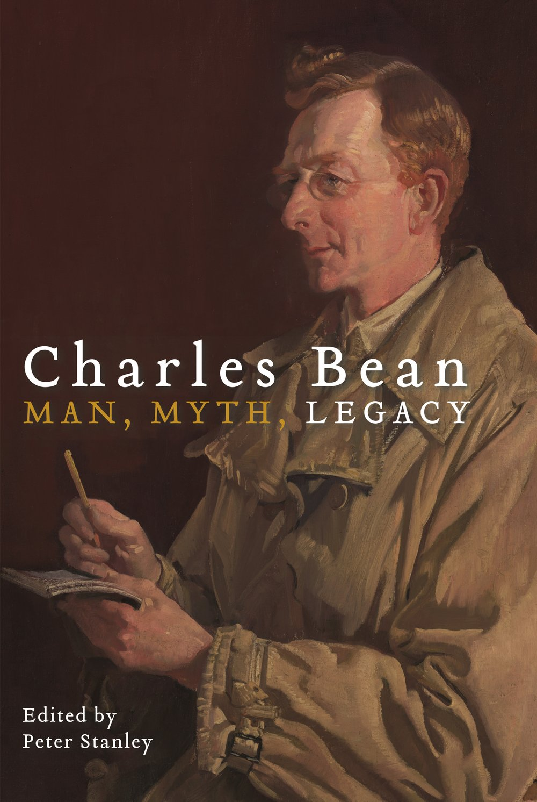
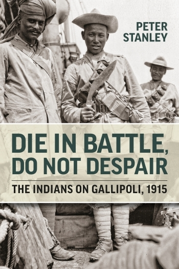
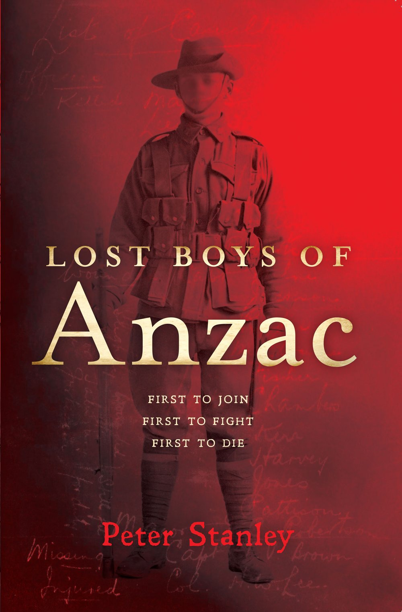
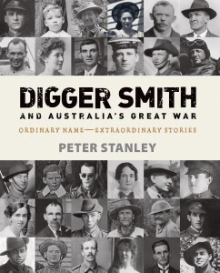
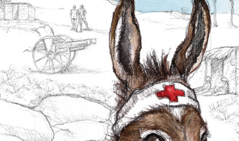
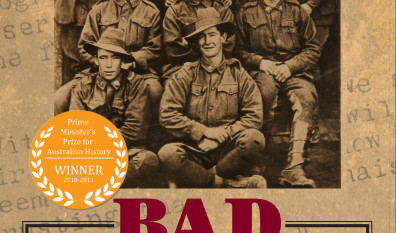

2025
Big Sky Publishing
Oboe One, Tarakan, 1945
An Australian Tragedy.
A comprehensive account of the 1945 Australian amphibious operation off Borneo.

A comprehensive catalog of Peter Stanley’s published books, edited collections, and major co-authored works. If you would like to acquire a copy, direct purchase links are provided where available, alongside publication records for reference and out-of-print titles.

A comprehensive account of the 1945 Australian amphibious operation off Borneo.
Exploring the intersection of Australian Rules football, wartime service, and home-front history.

An authoritative study of the East India Company's military forces in nineteenth-century India.

A landmark survey and evaluation of Australian military history writing across more than a century.
Examining the 1982 South Atlantic conflict from both British and Argentine perspectives.
A history of the fierce 1855 uprising in Bengal and the East India Company's military response.
The story of British Territorial soldiers deployed to garrison India during WWI.
An edited collection exploring counterfactual scenarios in Australian history.

Re-evaluating Australia’s official war correspondent and official historian.
A moving visual and social history of how WWI transformed Australia at home.

The first comprehensive study detailing the crucial role played by Indian troops at Gallipoli.

A tragic, intimate study following the lives and fatal fates of young soldiers killed on day one.
A history of a Victorian community devastated by the 2009 bushfires.

A novel exploring an Australian soldier’s First World War experience.

The legendary Gallipoli story retold with historical clarity.

Joint winner of the 2011 Prime Minister's Prize for Australian History.
Examining wartime strategy and the myth of a planned Japanese invasion in 1942.
The story of the most dangerous and exposed post on the Gallipoli peninsula.
A pioneering medical history examining surgical practice before anesthesia.
Investigating the costly 1945 Australian operation off Borneo in the final months of WWII.